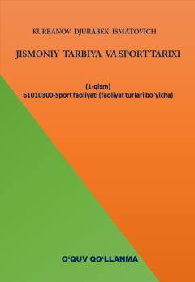

JTJismoniy tarbiya va sport tarixining nazariy hamda amaliy asoslariga bag'ishlangan o'quv qo'llanma.
Ushbu o'quv qo'llanma jismoniy tarbiya va olimpiya harakati tarixining shakllanishi hamda rivojlanish bosqichlarini ilmiy-metodik jihatdan yoritib beradi. Kitobda O'zbekistonda sport sohasidagi islohotlar, Milliy Olimpiya qo'mitasining tashkil etilishi va barkamol avlodni tarbiyalashda jismoniy tarbiyaning o'rni batafsil bayon etilgan.